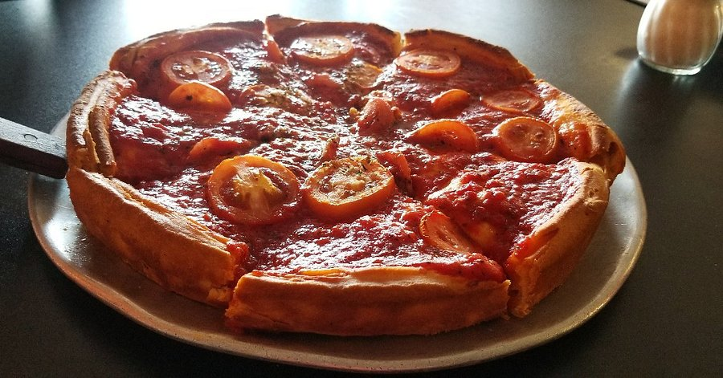

Chicago Pizzas
Chicago is an amazing city with a flourishing culture! One of the great cultural feats of Chicago is their influence in the culinary world! Chicago is home of the DEEP dish pizza. Is it a pie, or a disk filled with cheese? Either way, Chicago's deep dish pizza filled with tomatoe sauce cheese and goodness wrapped in a thick buttery crust, will have you dancing. It is truly a meal and a half!
History of Deep Dish Pizza

The Chicago deep dish pizza was actually founded by two people, Ike Sewell and Ric Ricardo. They were experimenting with thick buttery crust recepies, when they stumbled upon cooking the pizza "in reverse!" This means that the arrangement of the cooking ingredients were piled "the other way around". Hence, the dough was applied first on the bottom, then secondly, the cheese, next the filling and finally the sauce on top! This method prevented the cheese from burning during the long baking process. In 1943, they opened up the pizza restuant, UNO. The rest is history!